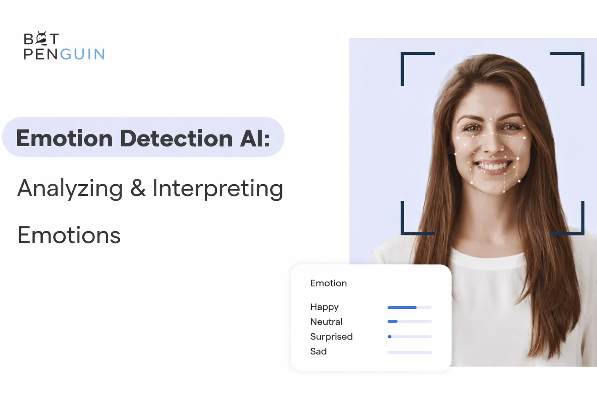

Explore the intelligent features that enable our AI Mental Health and Fitness Check Robo to support emotional well-being and promote a healthier lifestyle.
Combining emotion recognition and intelligent interaction to create a supportive companion for mental health awareness and healthy living.
The system uses AI and facial recognition to analyze expressions and identify emotional states such as happiness, sadness, or stress.
The robot interacts with users by providing motivational messages, relaxation suggestions, and fitness recommendations based on emotions.

Our AI Mental Health and Fitness Check Robo is designed to understand human emotions and provide supportive interaction. By combining emotion detection with intelligent responses, the system helps users become more aware of their mental state and encourages healthy lifestyle habits.
The robot communicates in a simple and friendly manner, making users feel comfortable while sharing emotions.
Analyzes facial expressions using AI to detect emotions like happy, sad, angry, or neutral.
Provides motivational messages, relaxation tips, and fitness suggestions based on detected mood.
Encourages healthy habits by promoting mental wellness and physical activity in daily life.
© 2026 AI Mental Health & Fitness Check Robo | Built with